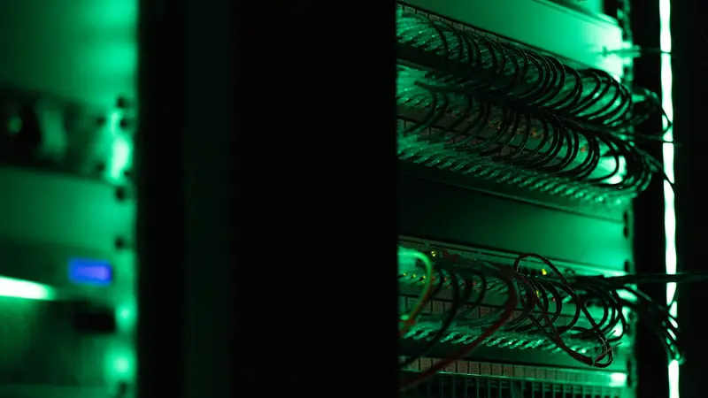
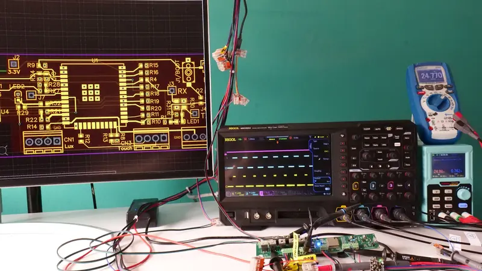

Investigação & inovação
Imaginar respostas tecnológicas inéditas para as falhas atuais.
Associação de utilidade pública · Suíça
A 3CH0 é uma associação suíça de utilidade pública dedicada à luta contra a violência conjugal, familiar e sexual. A SentrIQ é o seu primeiro projeto: um dispositivo de alerta discreto e autónomo, concebido para devolver uma voz e provas admissíveis às vítimas.
das vítimas sofrem violência psicológica, física e controlo coercivo
das vítimas de violência doméstica registadas são mulheres
intervalo médio entre intervenções policiais por violência conjugal na Suíça
das queixas arquivadas por falta de provas admissíveis
01 — Missão
Colocamos a segurança das pessoas e a validade jurídica das provas no centro de cada investigação.
Imaginar respostas tecnológicas inéditas para as falhas atuais.
Mecanismos de alerta silenciosos, pensados para o terreno e utilizáveis sob coação sem alertar o agressor.
Cifragem de hardware, sigilo médico e cumprimento das normas suíças de proteção de dados desde a primeira linha de código.
Marcação temporal inviolável e cadeia de custódia selada, garantindo a admissibilidade imediata das provas perante o Ministério Público.
02 — O problema
76,8 % das vítimas sofrem violência psicológica, física e controlo coercivo.
Gabinete Federal de Estatística, 2023 · estatísticas sobre violência doméstica
O controlo não se combate numa única frente. Para proteger de forma eficaz e duradoura, a tecnologia, o direito e o terreno social devem agir como um só e mesmo escudo.
As ferramentas digitais e os smartphones são utilizados para vigiar, o que dificulta consideravelmente o acesso das vítimas à ajuda.
Um alerta não basta se não produzir nada perante o juiz. A proteção vital deve selar instantaneamente a integridade da prova digital, sem depender de uma rede comprometida.
Nenhum interveniente pode agir sozinho. A eficácia assenta numa ponte direta entre intervenientes sociais, engenharia de ponta, forças de segurança e autoridades judiciais, para evitar qualquer arquivamento.
03 — A plataforma
A 3CH0 funciona como uma plataforma de investigação e inovação ininterrupta. Os projetos têm vocação para evoluir e multiplicar-se, trazendo respostas concretas e duradouras às falhas do sistema de proteção.
A infraestrutura miniatura autónoma: um alerta físico que não depende de nenhum dispositivo pessoal.
Marcação temporal, selagem criptográfica e conservação que garantem a admissibilidade.
Uma ligação direta com a polícia, a justiça e os serviços de apoio às vítimas.
A SentrIQ é a nossa primeira resposta de emergência, mas o compromisso da 3CH0 vai mais longe. Porque as tecnologias de vigilância evoluem sem cessar, a nossa associação estrutura um polo permanente de I&D para antecipar continuamente as novas ameaças e adaptar as nossas soluções às realidades do terreno.
04 — Primeiro projeto
As soluções de emergência atuais assentam quase exclusivamente no telemóvel pessoal da vítima. É precisamente o objeto que o agressor controla.
Inutilizáveis sob coação. Exigem desbloquear o ecrã, abrir uma aplicação, e deixam vestígios visíveis no histórico.
Alcance ilusório. Inoperantes assim que o telemóvel está desligado, fora de alcance ou confiscado; facilmente detetáveis pelo agressor através das definições Bluetooth.
Rejeição quase sistemática em tribunal. Ativação altamente arriscada em crise, ficheiros facilmente contestados por alteração e inadmissíveis por falta de selagem forense.
Objetos identificáveis, vulneráveis à destruição física.
Um alerta silencioso e autónomo, ativável sob coação e totalmente dissociado do telemóvel pessoal.

Um canal de transmissão seguro e soberano, operacional mesmo que o telemóvel seja confiscado, destruído ou espiado.

Selagem criptográfica e marcação temporal certificada, garantindo uma cadeia de prova inalterável e admissível em tribunal.
05 — Âmbito
A associação assegura a independência da I&D ética, enquanto a fase industrial se apoia na nossa startup e em parceiros certificados para garantir a soberania e a segurança do fabrico na Suíça.
Diagnóstico no terreno: identificação dos imperativos vitais com as associações especializadas, os juristas e os intervenientes médico-sociais.
Investigação interdisciplinar: modelação de protocolos estanques ao controlo coercivo e selagem probatória.
Engenharia de hardware: desenvolvimento com a HEIG-VD de protótipos funcionais, 100 % dissociados do telemóvel.
Testes em condições reais: validação técnica e jurídica, seguida da preparação das fases-piloto institucionais.
Industrialização segura conduzida pela nossa estrutura dedicada e por parceiros industriais certificados, garantindo um fabrico soberano na Suíça.
06 — Repartição de funções
A 3CH0 assegura o interesse público, a investigação a montante e a patente inicial. A estrutura de exploração assume as obrigações legais industriais e a implementação nos mercados públicos.
07 — Ecossistema
Quatro pilares de competência reunidos para garantir o rigor tecnológico, legal e humano do projeto.
Co-construção com a rede associativa especializada (nomeadamente a FAVA), psicólogos e intervenientes médico-sociais, para responder às realidades vividas pelas vítimas.
Escola Superior de Engenharia e Gestão do Cantão de Vaud: investigação aplicada, engenharia de hardware dedicada, resiliência de rede e forense digital.
Cifragem de hardware, estrita conformidade com a nova Lei federal suíça de proteção de dados (nLPD) e cadeia de custódia da prova, sob o aconselhamento de especialistas forenses.
Diálogo contínuo com as forças de segurança e as instâncias federais e cantonais, para assegurar a admissibilidade direta dos alertas e dos elementos de prova.
08 — Amanhã
As tecnologias de opressão evoluem. A 3CH0 perpetua o seu polo de inovação para antecipar os novos ciberperigos e conceber as proteções futuras.
Modelar os sinais fracos do controlo e os padrões de abuso para alertar e proteger antes da escalada física crítica.
Adaptação contínua dos protocolos criptográficos e forenses às exigências probatórias dos tribunais suíços e internacionais.
Vigilância tecnológica e contramedidas face a stalkerware, balizas espiãs e desvios de dispositivos ligados (IoT doméstico).
09 — Alcance
Se a nossa primeira implementação-piloto se enraíza na Suíça com os nossos parceiros académicos e institucionais, a arquitetura da 3CH0 e o seu protocolo forense foram concebidos para se estender ao plano internacional, face ao desafio universal do controlo coercivo.
10 — Agir
Investigadores, juristas, forças de segurança, associações de terreno e fundações parceiras: a 3CH0 reúne quem recusa a impunidade e age para que as provas triunfem sobre o silêncio.
A inovação só faz sentido se proteger os mais vulneráveis. Junte-se à aliança que transforma a proteção das vítimas.
Este site não guarda quaisquer dados no seu dispositivo, mas o seu navegador conserva um registo das páginas visitadas. Utilize uma janela de navegação privada se receia estar a ser vigiada.